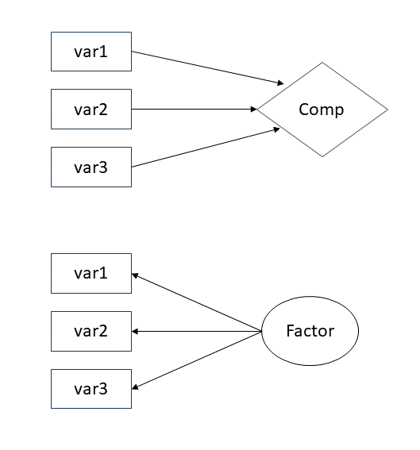
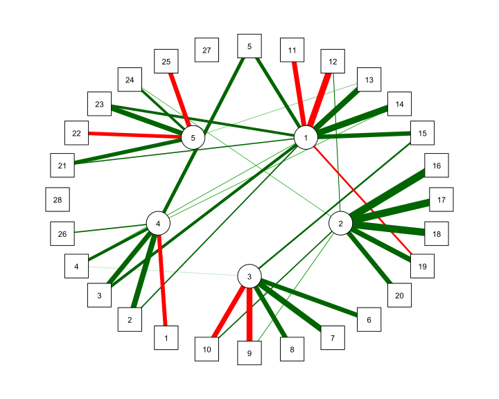
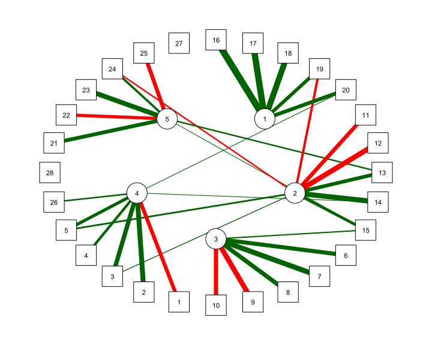

Exploratory Factor Analysis 1
Data Analysis for Psychology in R 3
Dr John Martindale
Psychology, PPLS
University of Edinburgh
QR!!!
Course Overview
|
multilevel modelling working with group structured data |
regression refresher |
| introducing multilevel models | |
| more complex groupings | |
| centering, assumptions, and diagnostics | |
| recap | |
|
factor analysis working with multi-item measures |
what is a psychometric test? |
| using composite scores to simplify data (PCA) | |
| uncovering underlying constructs (EFA) | |
| more EFA | |
| recap |
This week
- Introduction to EFA
- EFA vs PCA
- Estimation & Number of factors problem
- Factor rotation
- Example and interpretation
EFA vs PCA
Real friends don’t let friends do PCA. (W. Revelle, 25 October 2020)
Questions to ask before you start
PCA
- Why are your variables correlated?
- Agnostic/don’t care
- What are your goals?
- Just reduce the number of variables
EFA
- Why are your variables correlated?
- Believe there are underlying “causes” of these correlations
- What are your goals?
- Reduce your variables and learn about/model their underlying (latent) causes

Latent variables
Theorized common cause (e.g., cognitive ability) of responses to a set of variables
- Explain correlations between measured variables
- Held to be real
- No direct test of this theory

Latent variables?
- Anxiety
- Depression
- Trust
- Motivation
- Identity ?
- Socioeconomic Status ??
- Exposure to distressing events ???
PCA versus EFA: How are they different?
PCA
- The observed measures are independent variables
- The component is like a dependent variable (it’s really just a composite!)
- Components sequentially capture as much variance in the measures as possible
- Components are determinate
EFA
- The observed measures are dependent variables
- The factor is the independent variable
- Models the relationships between variables \((r_{y_{1},y_{2}},r_{y_{1},y_{3}}, r_{y_{2},y_{3}})\)
- Factors are indeterminate
Modeling the relationships
We have some observed variables that are correlated
EFA tries to explain these patterns of correlations
Aim is that the correlations between items after removing the effect of the Factor are zero
\[ \begin{align} \rho(y_{1},y_{2} | Factor)=0 \\ \rho(y_{1},y_{3} | Factor)=0 \\ \rho(y_{2},y_{3} | Factor)=0 \\ \end{equation} \]
| variable | wording |
|---|---|
| item1 | I worry that people will think I'm awkward or strange in social situations. |
| item2 | I often fear that others will criticize me after a social event. |
| item3 | I'm afraid that I will embarrass myself in front of others. |
Modeling the relationships
- In order to model these correlations, EFA looks to distinguish between common and unique variance.
\[ \begin{equation} var(\text{total}) = var(\text{common}) + var(\text{specific}) + var(\text{error}) \end{equation} \]
| common variance | variance shared across items | true and shared |
| specific variance | variance specific to an item that is not shared with any other items | true and unique |
| error variance | variance due to measurement error | not ‘true’, unique |
The general factor model equation
\[\mathbf{\Sigma}=\mathbf{\Lambda}\mathbf{\Phi}\mathbf{\Lambda'}+\mathbf{\Psi}\]
\(\mathbf{\Sigma}\): A \(p \times p\) observed covariance matrix (from data)
\(\mathbf{\Lambda}\): A \(p \times m\) matrix of factor loading’s (relates the \(m\) factors to the \(p\) items)
\(\mathbf{\Phi}\): An \(m \times m\) matrix of correlations between factors (“goes away” with orthogonal factors)
\(\mathbf{\Psi}\): A diagonal matrix with \(p\) elements indicating unique (error) variance for each item
Assumptions
As EFA is a model, just like linear models and other statistical tools, it has some assumptions:
- The residuals/error terms \((e)\) should be uncorrelated (it’s a diagonal matrix, remember!)
- The residuals/errors should not correlate with factor
- Relationships between items and factors should be linear, although there are models that can account for nonlinear relationships
What does an EFA look like?
Some data
| variable | wording |
|---|---|
| item1 | I worry that people will think I'm awkward or strange in social situations. |
| item2 | I often fear that others will criticize me after a social event. |
| item3 | I'm afraid that I will embarrass myself in front of others. |
| item4 | I feel self-conscious in social situations, worrying about how others perceive me. |
| item5 | I often avoid social situations because I’m afraid I will say something wrong or be judged. |
| item6 | I avoid social gatherings because I fear feeling uncomfortable. |
| item7 | I try to stay away from events where I don’t know many people. |
| item8 | I often cancel plans because I feel anxious about being around others. |
| item9 | I prefer to spend time alone rather than in social situations. |

What does an EFA look like?
Factor Analysis using method = ml
Call: fa(r = eg_data, nfactors = 2, rotate = "oblimin", fm = "ml")
Standardized loadings (pattern matrix) based upon correlation matrix
ML1 ML2 h2 u2 com
item_1 0.02 -0.59 0.35 0.65 1.0
item_2 0.00 0.69 0.48 0.52 1.0
item_3 0.00 0.78 0.61 0.39 1.0
item_4 -0.11 0.61 0.37 0.63 1.1
item_5 0.46 0.41 0.40 0.60 2.0
item_6 -0.68 -0.01 0.47 0.53 1.0
item_7 0.81 -0.02 0.65 0.35 1.0
item_8 0.74 0.03 0.55 0.45 1.0
item_9 0.74 -0.11 0.56 0.44 1.0
ML1 ML2
SS loadings 2.45 2.00
Proportion Var 0.27 0.22
Cumulative Var 0.27 0.49
Proportion Explained 0.55 0.45
Cumulative Proportion 0.55 1.00
With factor correlations of
ML1 ML2
ML1 1.00 0.06
ML2 0.06 1.00
Mean item complexity = 1.1
Test of the hypothesis that 2 factors are sufficient.
df null model = 36 with the objective function = 2.88 with Chi Square = 1138
df of the model are 19 and the objective function was 0.05
The root mean square of the residuals (RMSR) is 0.02
The df corrected root mean square of the residuals is 0.03
The harmonic n.obs is 400 with the empirical chi square 10.2 with prob < 0.95
The total n.obs was 400 with Likelihood Chi Square = 20.5 with prob < 0.37
Tucker Lewis Index of factoring reliability = 0.997
RMSEA index = 0.014 and the 90 % confidence intervals are 0 0.047
BIC = -93.3
Fit based upon off diagonal values = 1
Measures of factor score adequacy
ML1 ML2
Correlation of (regression) scores with factors 0.92 0.89
Multiple R square of scores with factors 0.85 0.80
Minimum correlation of possible factor scores 0.70 0.59Factor loading’s, like PCA loading’s, show the relationship of each measured variable to each factor.
- They range between -1.00 and 1.00
- Larger absolute values = stronger relationship between measured variable and factor
We interpret our factor models by the pattern and size of these loading’s.
- Primary loading’s: refer to the factor on which a measured variable has it’s highest loading
- Cross-loading’s: refer to all other factor loading’s for a given measured variable
Square of the factor loading’s tells us how much item variance is explained (
h2), and how much isn’t (u2)Factor correlations : When estimated, tell us how closely factors relate (see rotation)
SS Loadingand proportion of variance information is interpreted as we discussed for PCA.


Practical Steps
So how do we move from data and correlations to a factor analysis?
- Check the appropriateness of the data and decide of the appropriate estimator.
- Decide which methods to use to select a number of factors.
- Decide conceptually whether to apply rotation and how to do so.
- Decide on the criteria to assess and modify your solution.
- Run the analysis.
- Evaluate the solution (apply 4)
- Select a final solution and interpret the model, labeling the factors.
- Report your results.
Suitability of data, Estimation & Number of factors problem
Data suitability
- This boils down to is the data correlated.
- So the initial check is to look to see if there are moderate correlations (roughly > .20)
- We can take this a step further and calculate the squared multiple correlation (SMC).
- SMC are multiple correlations of each item regressed on all \(p-1\) other variables
- this metric tells us how much shared variation there is between an item and all other items
- This is one way to estimate a communalities (see later)
- There are also some statistical test (e.g. Bartlett’s test)
- However, these tests are generally not that informative.
Estimation
- For PCA, we discussed the use of the eigen-decomposition.
- This is not an estimation method, it is simply a calculation
- As we have a model for the data in factor analysis, we need to estimate the model parameters
- primarily here the factor loading’s.
Estimation & Communalities
The most efficient way to factor analyze data is to start by estimating communalities
Communalities are estimates of how much true variance any variable has
- Indicate how much variance in an item is explained by other variables, or factors
If we consider that EFA is trying to explain true common variance, then communalitie estimates are more useful to us than total variance.
Estimating communalities is difficult because population communalities are unknown
- Range from 0 (no shared variance) to 1 (all variance is shared)
- Occasionally estimates will be \(\ge 1\) (called a ‘Heywood Case’)
- Methods often are iterative and “mechanical” as a result
Principal axis factoring
This approach to EFA uses squared multiple correlation (SMC)
- Compute initial communalities from SMCs
- Once we have these reasonable lower bounds, we substitute the 1s in the diagonal of our correlation matrix with the SMCs derived in step 1
- Obtain the factor loading matrix using the eigenvalues and eigenvectors of the matrix obtained in the step 2
Some versions of principal axis factor use an iterative approach in which they replace the diagonal with the communalities obtained in step 3, and then repeat step 3, and so on, a set number of times
Method of minimum residuals
This is an iterative approach and the default of the fa procedure
- Starts with some other solution, e.g., PCA or principal axes, extracting a set number of factors
- Adjusts loading’s of all factors on each variable so as to minimize the residual correlations for that variable
MINRES doesn’t “try” to estimate communalities.
If you apply principal axis factoring to the original correlation matrix with a diagonal of communalities derived from step 2, you get the same factors as in the method of minimum residuals
Maximum likelihood estimation
Uses a general iterative procedure for estimating parameters that we have previously discussed.
The procedure works to find values for these parameters that maximize the likelihood of obtaining the covariance matrix
- Method offers the advantage of providing numerous “fit” statistics that you can use to evaluate how good your model is compared to alternative models
- Recall we can compare the model implied to the actual covariances to get fit.
- Assumes a distribution for your data, e.g., a normal distribution
ML con’s
The issue is that for big analyses, sometimes it is not possible to find values for factor loadings that = MLE estimates. + Referred to as non-convergence (you may see warnings)
May produce solutions with impossible values + Factor loadings > 1.00 (Heywood cases), thus negative residuals. + Factor correlations > 1.00
Non-continuous data
Sometimes the construct we are interested in is not continuous, e.g. number of crimes committed.
Sometimes we assume the construct is, but we measure it with a discrete scale.
Most constructs we seek to measure by questionnaire fall into the latter category.
- It’s thus usually okay to treat the data as if they are, too
- The exception is for maximum likelihood factor analysis
- Or if the observed distribution is very skewed
Non-continuous data

Non-continuous data
If we are concerned and the construct is normally distributed, we can conduct our analysis on a matrix of polychoric correlations
If the construct is not normally distributed, you can conduct a factor analysis that allows for these kinds of variables
Choosing an estimator
The best option, as with many statistical models, is ML.
If ML solutions fail to converge, principal axis is a simple approach which typically yields reliable results.
If concerns over the distribution of variables, use PAF on the polychoric correlations.
Number of factors
We have discussed the methods for deciding on the number of factors in the context of PCA.
Recall we have 4 tools:
- Variance explained
- Scree plots
- MAP
- Parallel Analysis (FA or PCA)
For FA, we generally want a slightly more nuanced approach than pure variance:
- Use them all to provide a range of plausible number of factors
- Treat MAP as a minimum
- PA as a maximum
- Explore all solutions in this range and select the one that yields the best numerically and theoretically.
Factor rotation
Factor rotation: what and why?
Factor solutions can sometimes be complex to interpret.
- the pattern of the factor loading’s is not clear.
- The difference between the primary and cross-loading’s is small
Why is this the case?
Rotational indeterminacy means that there are an infinite number of pairs of factor loading’s and factor score matrices which will fit the data equally well, and are thus indistinguishable by any numeric criteria
In other words, there is no unique solution to the factor problem
And this is also in part why the theoretical coherence of the models plays a much bigger role in FA than PCA.
Analytic rotation
Factor rotation is an approach to clarifying the relationships between items and factors.
- Rotation aims to maximize the relationship of a measured item with a factor.
- That is, make the primary loading big and cross-loading’s small.
Thus although we can not numerically tell rotated solutions apart, we can select the one with the most coherent solution.
There are many different ways this can be achieved.
- One framework for this is referred to as simple structure
Simple structure
Adapted from Sass and Schmitt (2011):
Each variable (row) should have at least one zero loading
Each factor (column) should have same number of zero’s as there are factors
Every pair of factors (columns) should have several variables which load on one factor, but not the other
Whenever more than four factors are extracted, each pair of factors (columns) should have a large proportion of variables which do not load on either factor
Every pair of factors should have few variables which load on both factors
Orthogonal vs Oblique Rotation
All factor rotation methods seek to optimize one or more aspects of simple structure.
- But there are two broad groupings
Orthogonal + Includes varimax and quartimax rotations + Axes at right angles; correlations between factors are zero
Oblique
- Includes promax and oblimin rotations
- Axes are not at right angles; correlations between factors are not zero
The impact of rotation
Original correlations

EFA with no rotation and 5 factors

The impact of rotation
EFA with no rotation and 5 factors

EFA with orthogonal rotation and 5 factors

The impact of rotation
EFA with orthogonal rotation and 5 factors

EFA with oblique rotation and 5 factors

How do I choose which rotation?
Easy, my recommendation is always to choose oblique.
Why?
- It is very unlikely factors have correlations of 0
- If they are close to zero, this is allowed within oblique rotation
- The whole approach is exploratory, and the constraint is unnecessary.
However, there is a catch…
Interpretation and oblique rotation
When we have an obliquely rotated solution, we need to draw a distinction between the pattern and structure matrix.
- Pattern Matrix: matrix of regression weights (loading’s) from factors to variables.
- Structure Matrix: matrix of correlations between factors and variables.
When we use orthogonal rotation, the pattern and structure matrix are the same.
When we use oblique rotation, the structure matrix is the pattern matrix multiplied by the factor correlations.
In most practical situations, this does not impact what we do, but it is important to highlight the distinction.
Example and interpretation
Worked Example
- In this weeks LEARN folder there is a worked example of an EFA.